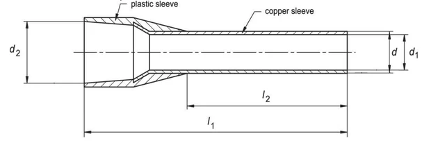
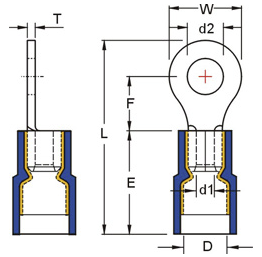
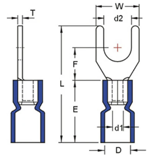
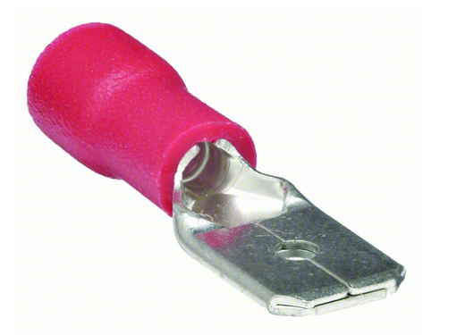
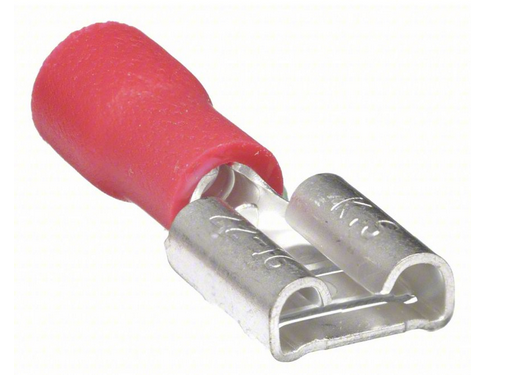
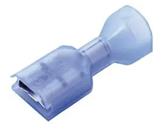
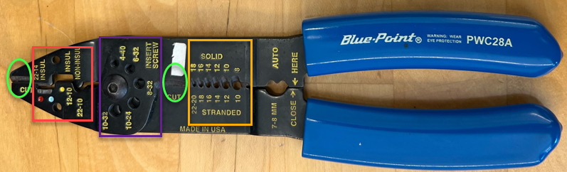

To receive credit: You may submit via hard copy or electronically via the Canvas submission portal.
All work must be neat and readable. If submitting via hard copy, be sure to include this sheet with
any additional work sheets you may have created.
For this homework, you are going to learn about wiring components, tools, and best practices upcoming for
Lab 4. You will be asked to use manufacturer and distributor websites (such as Ferrules Direct, Newark, KBC
Tools, Phoenix Contact, and Klein Tools) to examine components, specifications, and tools.
This homework should be completed before beginning the Lab 4 assignment.
Navigate to www.ferrulesdirect.com, find SKU AD10008, and fill out the following information:

AWG:
Color:
L2:
Max Electrical Rating:
Max Current Rating:
Material:
Find SKU AS05008YE on Ferrules Direct and fill out the following information:
AWG:
Color:
L2:
Max Electrical Rating:
Max Current Rating:
Material:
Find SKU RNYDS5-4 on Ferrules Direct and fill out the following information:

AWG:
Color:
W:
Stud Size:
Max Voltage Rating:
Max Current Rating:
Material:
Find SKU SVEL1-3.7 on Ferrules Direct and fill out the following information:

AWG:
Color:
W:
Stud Size:
Max Voltage Rating:
Max Current Rating:
Material:
Notice the last two connectors were referred to as "spades" as opposed to "forks". Do you consider these
terms to be distinct or interchangeable in industry?
Connectors typically have two different pieces which "mate" or "match" together. Historically you may see
these referred to as "gendered" names shown below, but can you find a common alternative "genderless"
naming convention which is applicable to various connector types?

Male /

Female /
Navigate to www.newark.com, find Part No. 3-520140-2. Fill out the following information:

AWG:
Color:
Quick Disconnect Terminal Type:
Mating Tab Width:
Voltage Rating:
Max Current Rating:
Material:
You may have heard that color can be used to indicate wire gauge. After reviewing Ferrules Direct, is this
a reliable indicator, and why or why not?
To emphasize how tedious spec-ing parts can be, compare part numbers RNYBS8-4 and
RNYBL804 on Ferrules Direct. What is the difference between the two?
Under the "Wire Ferrules" products menu on Ferrules Direct, list the 6 different categories of ferrules
available:
Under the "twin wire ferrules" category, filter for one that accommodates 2x18 AWG wires. How many
products were returned, and are they all the same color?
Based on those products, what are the last two specs/options you must consider?
Navigate to www.kbctools.com, search for Titan Crimpers, and answer the following:
Full name and model number (last 5 digits of the item #):
List the jaw colors and what each indicates:
Navigate to www.phoenixcontact.com, search for Crimpfox 10S, and answer the following:
Model or Part #:
Terminal types used for:
Compression type and what it means (from technical data/product properties):
AWG rating range:
Referring to the multi-tool shown, describe the purpose of each highlighted area:

Green circles:
Red box area:
Purple box area:
Orange box area:
Navigate to www.kleintools.com and find the product page for the Katapult 11063W:
What is the purpose of this tool?
What is the maximum length of insulation it can remove in a single step?
What is its AWG rating range (note the two different ratings)?
On the Klein Tools website, find the 603-4 screwdriver:
What size tip is this screwdriver?
Sketch and describe the shape of the tip viewed end-on:
What makes it a "good" quality screwdriver?
Compare the 603-4 to the 6222 screwdriver. How are they different?
On the Klein Tools website, find the 608-6 screwdriver:
What size tip is this screwdriver?
Sketch and describe the shape of the tip viewed end-on:
Is the sizing system for slotted screwdrivers different than Phillips screwdrivers, and how?
On the Klein Tools website, find the 85616 screwdriver set. How is this set different?